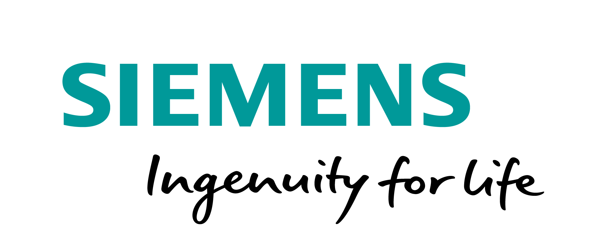

The performance of vision algorithms on many key problems that were once considered hard is now astounding (e.g. object detection and categorization). In many cases however, significant amounts of data are necessary to achieve high performance. We would like to focus on problem domains where insufficient raw data is available for designing and training a system. We see scarcity of data in light of the task specific objective function, as well as the underlying distributions of the natural prior and the data sampling prior. As a concrete example from autonomous driving, one can generate a potentially infinite amount of simulated data for training by using game engines. This may nevertheless miss unlikely situations that have not been explicitly modeled (such as a paper bag being blown on the road: is it an obstacle worthy of action?) Sometimes it may even be difficult to just detect that the available data is scarce with respect to an objective function. With the ever-increasing pervasiveness of vision algorithms in the real-world this becomes an important point to consider.
The topic of scarce data has been and is continuously being covered in the ML and adjoining communities, for instance in transfer learning. From an ML perspective we feel that vision still has a special place when it comes to explaining observed data due to the vast amount of potential prior knowledge (e.g. the separation of appearance and geometry) and data generation models (e.g. computer graphics) available. Accordingly, we are looking for unique opportunities for computer vision in modeling data and algorithms under bias or scarcity. Towards this we pose the following questions:
- When is data scarce or biased?
- How can we detect bias or scarcity in data?
- How can we improve and evaluate performance under bias or scarcity?
Program
- Date: June 22, 2018
- Start Time: 08:30 - 17:00
- Room: 251-B
| Start Time | Title | Speaker / Author(s) |
| 08:45 | Welcome, Introductory Remarks | Jan Ernst (Siemens) |
| 09:10 | Keynote: Human-Machine Collaboration for Large-Scale Image Annotation | Vittorio Ferrari (Google Research) |
| 09:45 | Keynote: Making Your Data Count: Sharing Information Across Domains and Tasks | Judy Hoffman (UC Berkeley) |
| 10:20 | Coffee Break and Poster Session | |
| 10:50 | Markov Chain Neural Networks | Maren Awiszus, Bodo Rosenhahn |
| 11:10 | A Generative Model for Zero Shot Learning Using Conditional Variational Autoencoders | Ashish Mishra, Shiva Krishna Reddy, Anurag Mittal, Hema Murthy |
| 11:30 | Endoscope Navigation and 3D Reconstruction of Oral Cavity by Visual SLAM with Mitigated Data Scarcity | Liang Qiu, Hongliang Ren |
| 11:50 | Lunch Break | |
| 13:20 | Keynote: Sparsity and Scarcity in the Automotive Domain | Jonas Uhrig (Daimler AG & University of Freiburg) |
| 13:55 | Keynote: How to satisfy the Thirst for Data? | Andreas Geiger (University of Tübingen & MPI-IS) |
| 14:30 | Detecting Anomalous Faces with "No Peeking" Autoencoders | Anand Bhattad, Jason Rock, David Forsyth |
| 14:50 | Coffee Break and Poster Session | |
| 15:30 | Keynote: Three Approaches to Training Object and Activity Detectors with Less Annotation | Jeff Siskind (Purdue) |
| 16:05 | Keynote: Fairness in Computer Vision | Olga Russakovsky (Princeton) |
| 16:40 | Concluding Remarks | Jan Ernst |
Keynote Speakers


Call for Papers
Call for Papers in PDF can be downloaded here
We solicit submissions that address any of the above questions as well as the following topics:
- Modeling data and learning from inhomogeneous input
- Structured and unstructured prior knowledge (e.g. language, multi-modality)
- Combining domain-related and unrelated data and priors
- Generative modeling for augmenting synthetic and real data
- Converging rendering and inference (e.g. combine partial inference with partial synthesis)
- Prior models for latent distributions that explain and generate images and videos
- Automation of data and prior exploration with minimal human-in-the-loop
- Design and evaluation of vision algorithms and systems under data scarcity
- Detecting and quantifying bias and scarcity in data
- Principled combinations of prior knowledge and learnt representations
- Detecting and avoiding overfitting
- Modeling and understanding generalization behavior with scarce data
Submission instructions:
- Each submitted paper must be no longer than 8 pages excluding references. Please refer to CVPR Author Guideline
- Please submit papers at CMT
Important dates (all
deadlines 11:59 PM PST):
-
Submission deadline: 2018 April 6, 2018 -
Decision notification: April 13, 2018 -
Final version submission: April 20, 2018 - Workshop day: June 22, 2018
Proceedings
Proceedings are available on CVF website at: http://openaccess.thecvf.com/CVPR2018_workshops/CVPR2018_W42.py
Organizers
 Jan Ernst Siemens Corporate Technology |
 Ziyan Wu Siemens Corporate Technology |
Srikrishna Karanam Siemens Corporate Technology |
 Kuan-Chuan Peng Siemens Corporate Technology |
